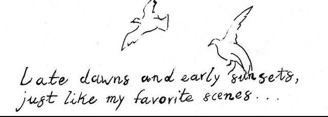

Late dawns and early sunsets Just like my favorite scenes Then holding hands, and life was perfect Just like up on the screen And the whole time, while always giving Counting your face among the living Up and down escalators Pennies and colder fountains Elevators and half-price sales Trapped in by all these mountains Running away and hiding with you I never thought they'd get me here Not knowing you changed from just one bite I fought them all off just to hold you close and tight But does anyone notice? But does anyone care? And if I had the guts to put this to your head But would anything matter if you're already dead? And should I be shocked now, by the last thing you said? Before I pull this trigger, your eyes vacant and stained But does anyone notice? But does anyone care? And if I had the guts to put this to your head And would anything matter if you're already dead? And now should I be shocked by the last thing you said? Before I pull this trigger, your eyes vacant and stained And in saying you loved me, made things harder at best And these words changing nothing as your body remains And there's no room in this Hell, there's no room in the next And our memories defeat us, and I'll end this duress But does anyone notice? But does anyone care? And if I had the guts to put this to your head But does anything matter if you're already dead? And should I be shocked now, by the last thing you said? Before I pull this trigger, your eyes vacant and stained And in saying you loved me, made things harder at best And these words changing nothing as your body remains And there's no room in this Hell, there's no room in the next But does anyone notice there's a corpse in this bed?